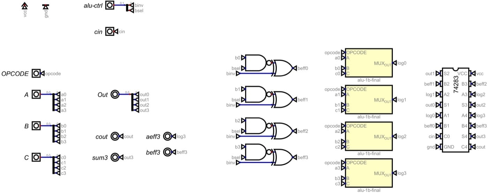

Dispatch · The slice
The muxes left. Logic rides the adder.
A parallel race into eight 74257s was eating the board. LUT3 now feeds the 74283 directly. Arithmetic and logic share one path.
The old ALU split the incoming signal: one path raced through masking into the 74283 for arithmetic, another through the LUT3 for logic. Both collided at the end of the slice in eight 74257 mode multiplexers. The branch created routing congestion, footprint bloat — eight dedicated ICs and thirty-two A-masking gates — and added a final delay to the critical math path.
Pass-through
The datapath is now a serial pipeline. The 74257s and the discrete A-masking logic are gone. LUT3 output feeds the A pins of the adder.
For arithmetic, the LUT3 is programmed as a transparent wire, passing operand A. The B-mask provides B or not-B. For logic, the LUT3 computes the result — A AND B, say — and the B-mask forces B to zero with cin held at zero. The 74283 computes that plus nothing, and becomes an exit conduit.
Locally the adder waits for the LUT. Globally the mux delay at the end of a 32-bit chain is gone. The board recovers eight ICs and a branching web of copper.
Carry skip in the 4-bit cell
A full lookahead 74182 was discarded for the spine problem on a flat PCB. Pure ripple on 32 bits of 74283 was about 110 ns — roughly 9 MHz on copper. Carry-bypass lives inside the 4-bit slice instead. Four XORs check propagate; a group AND and a 2-to-1 mux let cin skip the adder when the group is propagating.

Fig. — alu-4b-finalBypass in the slice; 32-bit top level untouched
On 74AHCT copper that is the difference between about 9 MHz and about 16.5 MHz. On an FPGA the same muxes steal the hard CARRY4 primitives and cost bragging-rights megahertz. The trade is willing: a repetitive KiCad board that is fast in the medium that matters.